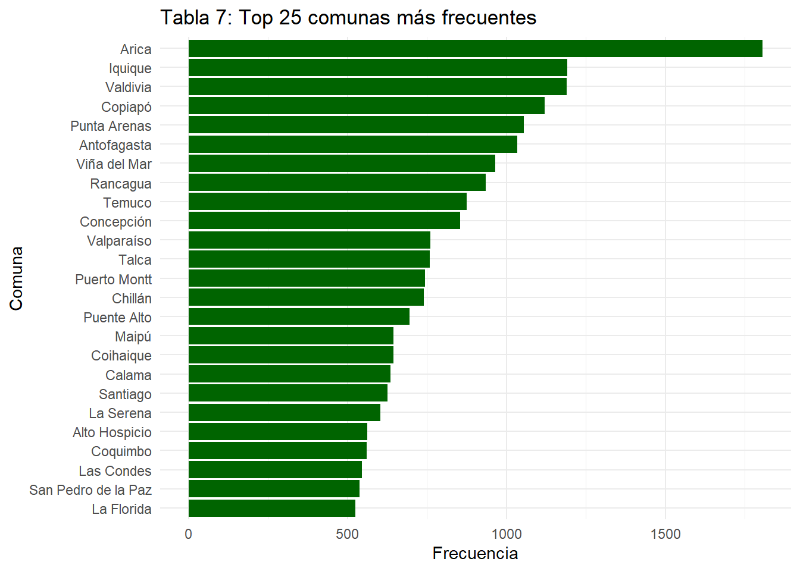

| Media | Mediana | Cuartil 1 | Cuartil 3 | Rango | Desviacion estandar | Varianza | Moda |
|---|---|---|---|---|---|---|---|
| 3.756046 | 4 | 2 | 6 | 8 | 1.859821 | 3.458934 | 4 |
| a Fuente: Elaboración propia en base a Encuesta CASEN 2022. |
Incidencia en el nivel educacional máximo alcanzado de adultos chilenos
Análisis de datos Multinivel
Abstract
En esta investigación se ahondaran en los factores que inciden en el nivel educacional máximo alcanzado por personas con 20 años o más residentes en 324 comunas de Chile. Se trabajara con un N general de 51.686 casos. Se busca ahondar en la influencia que tienen las siguientes variables: si pertenece a un pueblo indígena; nivel educacional de los padres; conectividad a internet; y dificultad para concentrarse y poner atención. La relevancia de esta investigación radica en que la educación es uno de los pilares fundamentales de las sociedades modernas, tanto en los procesos de socialización como culturales. Existen diversos factores que pueden incidir en alcanzar o no un nivel determinado de educación, como pueden ser los ya nombrados o el nivel de ingresos, el sexo, la orientación sexual o la edad. Se buscará realizar un modelo multinivel donde trabajaremos con variables de nivel 1 y de nivel 2 para ver su incidencia en nuestra variable dependiente.
Introducción
La educación es un pilar fundamental del desarrollo individual y colectivo. En sociedades profundamente desiguales como las latinoamericanas y en este caso, la chilena, el acceso y logro educativo son procesos fuertemente influenciados por factores estructurales e individuales. En particular, variables como el nivel educacional de los padres, la pertenencia a pueblos indígenas, las dificultades de concentración, la conectividad digital, junto con la comuna de residencia se configuran como determinantes críticos del nivel educativo máximo alcanzado por los individuos. Esta problemática no solo tiene implicancias en términos de oportunidades individuales, sino que también reproduce desigualdades sociales estructurales que afectan la cohesión y movilidad social (Bourdieu & Passeron, 1990).
Diversos estudios han demostrado que el nivel educativo de los padres constituye un predictor sólido del rendimiento académico y de las trayectorias escolares de sus hijos. Mejía y Mejía (2023) sostienen que los hijos de padres con mayor nivel de instrucción (capital cultural) tienden a alcanzar logros educativos más altos, en parte por el capital cultural que se transmite en el hogar y por el acompañamiento en el proceso educativo. Este fenómeno ha sido ampliamente documentado en donde el capital familiar actúa como una ventaja comparativa.
Otro eje de desigualdad significativa es la pertenencia a pueblos indígenas. En su análisis sobre el acceso y permanencia de estudiantes indígenas en la educación superior, López y Escobar (2008) destacan las múltiples barreras—lingüísticas, económicas y culturales—que enfrentan estos estudiantes. Además, señalan que la discriminación estructural reduce las expectativas de éxito escolar y limita la movilidad educativa de esta población. Esta situación historica que requieren una atención particular.
La conectividad digital ha adquirido una relevancia especial en los últimos años, particularmente a raíz de la pandemia de COVID-19. Rodríguez et al. (2021) muestran cómo la falta de acceso a dispositivos tecnológicos y a internet de calidad afectó negativamente el proceso formativo de miles de estudiantes. Las brechas digitales se han convertido así en un nuevo eje de desigualdad educativa, afectando especialmente a estudiantes de zonas rurales o de bajos ingresos, quienes vieron restringido su derecho a la educación durante largos periodos.
En esta línea, también es relevante considerar la comuna de residencia como un factor que puede incidir en las oportunidades educativas de los individuos. Las comunas en Chile presentan profundas diferencias en términos de calidad de la infraestructura escolar, dotación docente, oferta de programas educativos y condiciones socioeconómicas locales. Así, estudiantes que viven en comunas con mayores recursos y mejor acceso a servicios públicos tienden a contar con un entorno más propicio para el desarrollo académico, mientras que aquellos que residen en comunas más vulnerables enfrentan múltiples obstáculos que limitan su trayectoria escolar. Estas diferencias comunales se traducen en desigualdades en el nivel educativo máximo alcanzado, reforzando patrones territoriales de exclusión y movilidad social reducida.
En el plano individual, factores como la dificultad de concentración también inciden en el rendimiento académico. Jiménez y Fernández (2022) analizan cómo los problemas de concentración afectan negativamente el aprendizaje, y cómo estas dificultades se ven exacerbadas en contextos de pobreza, estrés familiar o ausencia de acompañamiento educativo. Las condiciones del entorno, por tanto, pueden potenciar o mitigar estas dificultades individuales, lo que evidencia la necesidad de un enfoque integral.
En este contexto, es crucial analizar cómo la conjunción de factores como el nivel educativo de los padres, la etnicidad, la conectividad digital, la comuna y las capacidades individuales (como la concentración) contribuyen o limitan el logro educativo máximo. No se trata de fenómenos aislados, sino de un entramado complejo donde se articulan múltiples dimensiones de la desigualdad. Entender esta dinámica resulta clave para proponer intervenciones eficaces que garanticen una mayor equidad en el acceso, permanencia y éxito en el sistema educativo.
Para el presente estudio vamos a utilizar la encuesta CASEN 2022, de la cual se extrajo 51.686 observaciones y 9 variables. Nuestra variable dependiente es “el máximo nivel educacional alcanzado”, y nuestras variables independientes de nivel 1 son “la pertenencia a pueblos originarios” y “dificultad para concentrarse”, en nuestras variables de nivel 2 tenemos el “nivel máximo de educacional alcanzado por los padres” y “conectividad”, y nuestra variable de anidación serán las “comunas”
Objetivos:
Analizar el efecto de factores individuales (variables de nivel 1) y contextuales (variables de nivel 2 y de anidación) sobre el nivel educativo máximo alcanzado por las personas en Chile, utilizando modelos estadísticos que consideren la estructura anidada de los datos a nivel de comuna.
Objetivos Especificos:
1) Cuantificar la variación del intercepto del nivel educativo máximo entre comunas mediante la estimación de efectos aleatorios.
2) Examinar si el efecto del nivel educacional promedio de los padres en la comuna sobre el nivel educativo máximo alcanzado por los individuos varía según la comuna de residencia, considerando la comuna como una variable de nivel contextual que modera dicha relación en un modelo multinivel.
Hipotesis Nivel 1:
Pertenencia a pueblos originarios
H₀: β1=0\beta_1 = 0β1=0 → La pertenencia a pueblos originarios no se asocia significativamente con el nivel educacional máximo alcanzado.
H₁: β1<0\beta_1 < 0β1<0 → La pertenencia a pueblos originarios se asocia negativamente con el nivel educacional máximo alcanzado.
Dificultad para concentrarse
H₀: β2=0\beta_2 = 0β2=0 → La dificultad para concentrarse no tiene efecto significativo sobre el nivel educacional máximo.
H₁: β2<0\beta_2 < 0β2<0 → La dificultad para concentrarse tiene un efecto negativo sobre el nivel educacional máximo.
Hipotesis Nivel 2:
Conectividad digital
H₀: β3=0\beta_3 = 0β3=0 → La conectividad digital no se asocia significativamente con el nivel educacional máximo.
H₁: β3>0\beta_3 > 0β3>0 → Una mayor conectividad digital se asocia con un mayor nivel educacional máximo.
Promedio del nivel educacional de los padres en la comuna
H₀: γ01=0\gamma_{01} = 0γ01=0 → El promedio educacional de los padres en la comuna no influye significativamente en el nivel educacional de los individuos.
H₁: γ01>0\gamma_{01} > 0γ01>0 → Un mayor promedio educacional de los padres en la comuna se asocia con un mayor nivel educacional de los individuos.
Varianza comunal
H₀: τ00=0\tau_{00} = 0τ00=0 → No existe variación significativa en el nivel educacional máximo entre comunas.
H₁: τ00>0\tau_{00} > 0τ00>0 → Existe variación significativa entre comunas en el nivel educacional máximo.
Variables
Estadísticos descriptivos:
a) Nivel educacional máximo alcanzado (dependiente)
La variable nivel educacional máximo alcanzado por la persona encuestada es una variable cuantitativa, ya que sus categorías tienen un orden jerárquico y son más de 5 posibles valores. Los valores van de 0 a 8, el valor más bajo significa que no ha recibido ninguna educación formal, mientras que el valor más alto significa que ha completado un postgrado o más, pasando por etapas como educación básica, media y superior, completa o incompleta. Esta variable permite analizar cómo se distribuye la población encuestada con respecto al nivel de educación máximo alcanzado.
Se puede observar que la media de esta variable es 4, al igual que su moda, lo que equivale a la educación media completa, tambien se observa una desviación estandar de 1.85 puntos con respecto de la media . Por otro lado, un 25% de los encuestados llegaron a un nivel de educación básica incompleta, y únicamente un 24,57% de la muestra tuvo algún tipo de educación superior (universitaria o tecnica) y/o postgrado.
| Nivel máximo alcanzado | n | Proporción (%) |
|---|---|---|
| Sin educación | 1040 | 2.01 |
| Básica incompleta | 7397 | 14.31 |
| Básica completa | 5887 | 11.39 |
| Media incompleta | 6147 | 11.89 |
| Media completa | 14875 | 28.78 |
| Superior incompleta | 3332 | 6.45 |
| Superior completa | 11695 | 22.63 |
| Postgrado incompleta | 311 | 0.60 |
| Postgrado completa | 1002 | 1.94 |
| a Fuente: Elaboración propia en base a Encuesta CASEN 2022. |
b) Pertenencia a pueblos indígenas
La variable pertenencia a pueblos indígenas identifica si la persona se reconoce como perteneciente a uno de los 10 pueblos originarios reconocidos en Chile. Es una dummy, donde el valor 1 índica pertenencia y el 0 indica no pertenencia. Esta variable permite observar los porcentajes de pertenencia indígena y no indígena.
En la variable de pueblos indigenas podemos observar que del total de la muestra de 51.686 encuestados, más de 4/5 de la muestra (87% aprox.) no se considera o no pertenece a un pueblo originario, mientras que el 13.16% de los encuestados sí pertenece o se considera a sí mismo parte de algún pueblo originario.
| Pertenencia pueblo indigena (1=si) | n | Proporción (%) |
|---|---|---|
| 0 | 44883 | 86.84 |
| 1 | 6803 | 13.16 |
| a Fuente: Elaboración propia en base a Encuesta CASEN 2022. |
c) Dificultad para concentrarse:
La variable dificultad de concentración mide el grado en que la persona declara tener dificultades para concentrarse o mantener la atención. Es una variable categórica, con una escala que va desde el 0 (no tiene dificultad) hasta el 3 (sí presenta bastante dificultad).
En cuanto a las medidas de tendencia central, se observa que la media de la dificultad de concentración es moderadamente baja, lo que sugiere que la mayoría de las personas encuestadas no reporta niveles elevados de dificultad. La mediana y la moda son valores cercanos a 0 o 1, lo que refuerza lo dicho. Respecto a la dispersión, la desviación estándar y la varianza indican que existe cierta variabilidad entre los encuestados, aunque no extrema. Es cerca de un 2% de los encuestados los que tienen problemas de concentración.
| Media | Mediana | Cuartil 1 | Cuartil 3 | Rango | Desviacion estandar | Varianza | Moda |
|---|---|---|---|---|---|---|---|
| 0.1734706 | 0 | 0 | 0 | 3 | 0.43247 | 0.1870303 | 0 |
| a Fuente: Elaboración propia en base a Encuesta CASEN 2022. |
| Tabla 3.2. Frecuencias y porcentajes de dificultad de concentración | ||
| Encuesta CASEN 2022 | ||
| Categoría | Frecuencia | % |
|---|---|---|
| 0 | 43796 | 84.73 |
| 1 | 6866 | 13.28 |
| 2 | 972 | 1.88 |
| 3 | 52 | 0.10 |
| Fuente: Elaboración propia con base en CASEN 2022 | ||
d) Promedio maximo nivel educacional padres:
Esta variable representa el nivel educacional más alto alcanzado por ambos padres de la persona encuestada, calculando un promedio entre ambos. Es una variable categórica ordinal que va de valores 1 a 5, y como es un promedio puede tener valores intermedios como 2.5 o 3.5. Valores más altos indican un mayor nivel de educación parental, lo que suele estar asociado positivamente con el nivel educacional alcanzado por los hijos. Este promedio se calculo en base a una pregunta que medía el nivel educacional de la madre y del padre, la cual fue recodificada para que cada una pudiera tener valores entre 1-5 para luego calcular el promedio.
Los resultados muestran que el nivel educacional de los padres se concentra en tramos bajos. La media es de 2,24 y la mediana es 2, lo que indica que la mayoría no supera la enseñanza básica. La moda también es 2, reafirmando esta tendencia. Aunque hay casos con niveles altos (rango hasta 5), estos son poco frecuentes.
En términos proporcionales (Tabla 5.1), cerca del 61% de los padres se ubica entre niveles “muy bajo” y “bajo”, mientras que solo un 10% alcanza niveles “medio-alto” o superiores.
| Media | Mediana | Cuartil 1 | Cuartil 3 | Rango | Desviacion estandar | Varianza | Moda |
|---|---|---|---|---|---|---|---|
| 2.239668 | 2 | 2 | 3 | 4 | 0.801582 | 0.6425338 | 2 |
| a Fuente: Elaboración propia en base a Encuesta CASEN 2022. |
| Nivel educacional | n | Proporción (%) |
|---|---|---|
| Nivel muy bajo | 6972 | 13.49 |
| Nivel bajo-muy bajo | 4391 | 8.50 |
| Nivel bajo | 20034 | 38.76 |
| Nivel medio-bajo | 5972 | 11.55 |
| Nivel medio | 8820 | 17.06 |
| Nivel medio-alto | 2754 | 5.33 |
| Nivel alto | 2545 | 4.92 |
| Nivel alto-muy alto | 132 | 0.26 |
| Nivel muy alto | 66 | 0.13 |
| a Fuente: Elaboración propia en base a Encuesta CASEN 2022. |
e) Escala conectividad
Esta variable indica el nivel de acceso a conexión a internet del encuestado, ya sea medianta banda ancha móvil, mediante datos moviles en un celular o por fibra óptica. Esta variable es cuantitativa y tiene valores entre 0 a 5, y es una variable construida como escala sumativa, es decir los valores más altos tienen mas posibilidades de una mejor conexión o una conexión mas constante a internet, mientras que el 0 representa que la persona no tiene acceso a internet.
Los resultados muestran que el nivel de conectividad es mayoritariamente bajo. La media es de 2,22 y la moda es 1, lo que indica que muchas personas tienen poca o ninguna conexión a internet. El 25% de los casos está en el nivel más bajo (cuartil 1 = 1) en un rango de 0 a 5, y el 75% no supera el nivel 3. Aunque hay casos con alta conectividad (rango hasta 5), son pocos. En general, se observa una distribución desigual, con predominio de bajos niveles de acceso.
| Media | Mediana | Cuartil 1 | Cuartil 3 | Rango | Desviacion estandar | Varianza | Moda |
|---|---|---|---|---|---|---|---|
| 2.223581 | 2 | 1 | 3 | 5 | 1.270697 | 1.614672 | 1 |
| a Fuente: Elaboración propia en base a Encuesta CASEN 2022. |
e) Comuna (cluster)
La variable comuna identifica la unidad territorial en la que reside cada persona encuestada. Corresponde a una variable categórica nominal con 335 categorías posibles, una por cada comuna del país. En este análisis se utilizará esta variable como la variable de anidación o cluster.
En esta variable se encuestaron a 335 comunas en total, de las cuales las siguientes comunas; Ollague, Juan Fernández, Isla de Pascua, Cochamo, Chaitén, Futaleufú, Hualaihue, Palena, Guaitecas, O´Higgins y La Antártica no respondieron, por lo que nuestro N real es 324 comunas encuestadas.
En la Tabla 7 se puede observar las 25 comunas con más frecuencia de respuesta, que del total de 51.686 respuestas totales, representan el 39.87% del total, es decir 20.608 encuestados viven en alguna de esas comunas. La comuna con más respuestas fue Arica con un total de 1805, es decir un 3,49% total de la muestra. La media de respuestas por comuna es de 154.28, con una desviación estándar de 222.57 respuestas, lo que significa que hay comunas con mucha más representación que otras

| Media | Mediana | Cuartil 1 | Cuartil 3 | Rango | Desviación estándar | Varianza | Moda |
|---|---|---|---|---|---|---|---|
| 154.2866 | 78 | 46.5 | 142.5 | 1799 | 222.5782 | 49541.07 | 59 |
| a Fuente: Elaboración propia en base a Encuesta CASEN 2022. |
Correlación intraclase (ICC)
Se calculó la correlación intraclase para la variable dependiente nvl_educ, resultando en un 14% aproximadamente. Esto quiere decir que un 14% de la varianza de nuestra variable dependiente corresponde a unidades de nivel 2.
=======================================
Model 1
---------------------------------------
(Intercept) 3.27 ***
(0.04)
---------------------------------------
AIC 203143.76
BIC 203170.32
Log Likelihood -101568.88
Num. obs. 51686
Num. groups: comuna 335
Var: comuna (Intercept) 0.48
Var: Residual 2.93
=======================================
*** p < 0.001; ** p < 0.01; * p < 0.05[1] 0.1416866Comparación y construcción de modelos
Comparación de regresiones en modelo individual y grupal
Se generó una base de datos agregada/colapsada agrupando las variables por la variable cluster: comuna. Esta base se construyó colapsando las variables por el promedio.
Se puede observar que la variable de nivel 1 “pueblo_indigena” pierde su significación estadística dentro del modelo 2, y la segunda variable de nivel 1 “dificultad_conc” disminuye a más de la mitad, además de aumentar el error estándar. En el caso de las variables de nivel 2, “mean_educ_padres” disminuye poco más de 0.1 puntos en el modelo 2, y su error estándar se eleva casi a la mitad. Por otro lado, la variable “mean_conectividad” aumenta al pasar al modelo agregado.
Comparación de modelos
=========================================================================
Dependent variable:
-----------------------------------------------------
nvl_educ
Individual Agregado
(1) (2)
-------------------------------------------------------------------------
mean_educ_padres 1.769*** 1.655***
(0.037) (0.064)
mean_conectividad 0.217*** 0.322***
(0.023) (0.038)
pueblo_indigena -0.301*** 0.097
(0.022) (0.074)
dificultad_conc -0.740*** -0.295**
(0.017) (0.143)
Constant -0.521*** -0.654***
(0.053) (0.104)
-------------------------------------------------------------------------
Observations 51,686 335
R2 0.183 0.889
Adjusted R2 0.183 0.888
Residual Std. Error 1.681 (df = 51681) 0.242 (df = 330)
F Statistic 2,892.966*** (df = 4; 51681) 659.827*** (df = 4; 330)
=========================================================================
Note: *p<0.1; **p<0.05; ***p<0.01Modelo 1 con predictores de nivel 1
=======================================
Model 1
---------------------------------------
(Intercept) 3.46 ***
(0.04)
pueblo_indigena -0.36 ***
(0.02)
dificultad_conc -0.75 ***
(0.02)
---------------------------------------
AIC 201046.58
BIC 201090.85
Log Likelihood -100518.29
Num. obs. 51686
Num. groups: comuna 335
Var: comuna (Intercept) 0.45
Var: Residual 2.81
=======================================
*** p < 0.001; ** p < 0.01; * p < 0.05Modelo 2 con predictores de nivel 2
=======================================
Model 1
---------------------------------------
(Intercept) -0.87 ***
(0.07)
mean_conectividad 0.24 ***
(0.03)
mean_educ_padres 1.82 ***
(0.05)
---------------------------------------
AIC 202354.65
BIC 202398.92
Log Likelihood -101172.33
Num. obs. 51686
Num. groups: comuna 335
Var: comuna (Intercept) 0.01
Var: Residual 2.93
=======================================
*** p < 0.001; ** p < 0.01; * p < 0.05Modelo 3 con predictores de nivel 1 y 2
=======================================
Model 1
---------------------------------------
(Intercept) -0.54 ***
(0.08)
pueblo_indigena -0.32 ***
(0.02)
dificultad_conc -0.75 ***
(0.02)
mean_conectividad 0.22 ***
(0.03)
mean_educ_padres 1.77 ***
(0.06)
---------------------------------------
AIC 200313.72
BIC 200375.69
Log Likelihood -100149.86
Num. obs. 51686
Num. groups: comuna 335
Var: comuna (Intercept) 0.01
Var: Residual 2.81
=======================================
*** p < 0.001; ** p < 0.01; * p < 0.05Comparación de regresiones a nivel individual, agregado y multinivel
En base a estos resultados es posible ver que los resultados del modelo multinivel (Modelo 3) se asemejan más a los datos del modelo individual (Modelo 1). Esto puede deberse a que los datos de nivel 2 creados ya representaban de buena forma el nivel al que pertenecían, aunque debería haber una indagación mayor al por qué ocurre esto.
Se puede observar que el valor que más impacta al nivel educacional máximo alcanzado es el promedio del nivel educativo de los padres por comuna, ya que, por cada punto que aumenta este promedio nuestra variable dependiente aumenta en 1.8 puntos aproximadamente, rechazando la hipótesis nula con un nivel de confianza mayor al 95% y encontrando evidencia a favor de la hipótesis alternativa que afirma que unos padres con un nivel educacional más alto se asocian a un nivel educacional más alto alcanzado.
Sobre la variable de pertenencia a pueblos indígenas, también encontramos evidencia a favor de nuestra hipótesis nula, ya que, al ser dummy, se puede afirmar que el hecho de ser indígena hace que el nivel educacional máximo alcanzado disminuya en 0.32 puntos con un 99.9% de confianza.
Dentro del impacto negativo, es la dificultad para concentrarse la que tiene el mayor impacto, ya que con un p-value menor a 0.001 podemos afirmar que por cada punto que aumenta, el nivel educacional máximo alcanzado disminuye en 0.75 puntos, rechazando así la hipótesis nula de no asociación.
Finalmente, la conectividad tiene un impacto positivo en nuestra variable dependiente. Es posible rechazar la hipótesis nula con una probabilidad de error menor a 0.001 y encontrar evidencia a favor de nuestra hipótesis alternativa. Por cada punto que sube el promedio de conectividad por comuna, el nivel educacional máximo alcanzado por la persona encuestada aumenta en 0.22 puntos.
=================================================================
Model 1 Model 2 Model 3
-----------------------------------------------------------------
(Intercept) -0.52 *** -0.65 *** -0.54 ***
(0.05) (0.10) (0.08)
pueblo_indigena -0.30 *** 0.10 -0.32 ***
(0.02) (0.07) (0.02)
dificultad_conc -0.74 *** -0.30 * -0.75 ***
(0.02) (0.14) (0.02)
mean_conectividad 0.22 *** 0.32 *** 0.22 ***
(0.02) (0.04) (0.03)
mean_educ_padres 1.77 *** 1.65 *** 1.77 ***
(0.04) (0.06) (0.06)
-----------------------------------------------------------------
R^2 0.18 0.89
Adj. R^2 0.18 0.89
Num. obs. 51686 335 51686
AIC 200313.72
BIC 200375.69
Log Likelihood -100149.86
Num. groups: comuna 335
Var: comuna (Intercept) 0.01
Var: Residual 2.81
=================================================================
*** p < 0.001; ** p < 0.01; * p < 0.05Biliografía
Bourdieu, P., & Passeron, J.-C. (1990). La reproducción. Elementos para una teoría del sistema de enseñanza. Laia.
Jiménez, J. M., & Fernández, M. A. (2022). Problemas de concentración que afectan el rendimiento académico: Estudio de caso. Latinoamérica. Revista de Estudios Educativos, 52(1). https://latam.redilat.org/index.php/lt/article/view/3246
López, J., & Escobar, A. (2008). Ser indígena en la educación superior: ¿Desventajas reales o percibidas? Estudios Sociológicos, 26(78), 713–736. https://www.scielo.org.mx/scielo.php?pid=S0185-27602008000400003&script=sci_arttext
Mejía, D. A., & Mejía, M. T. (2023). La influencia de los padres en el rendimiento académico de los niños. ResearchGate. https://www.researchgate.net/publication/391068651_La_influencia_de_los_padres_en_el_rendimiento_academico_de_los_ninosThe_influence_of_parents_on_children’s_academic_achievement
Rodríguez, F., Pérez, M., & Arévalo, J. (2021). Análisis sobre la educación virtual: impactos en el proceso formativo. Revista Conrado, 17(83). https://www.redalyc.org/journal/280/28073811035/html/
Mide UC. (2020). Indicadores de desarrollo comunal y escolar (IDCE): Desigualdades territoriales en la educación chilena. Pontificia Universidad Católica de Chile. Recuperado de https://mideuc.cl